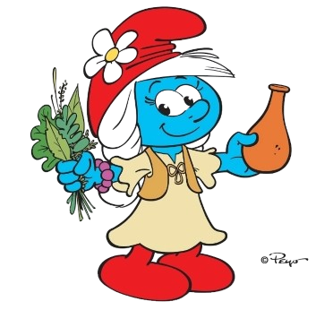
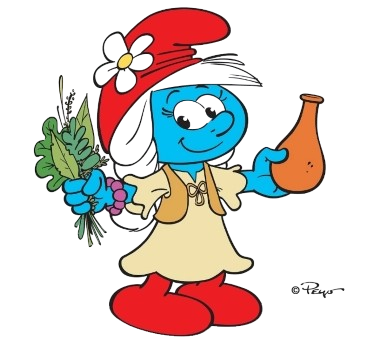
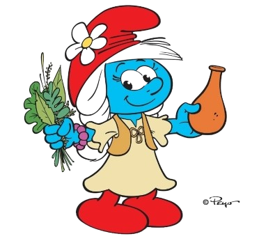
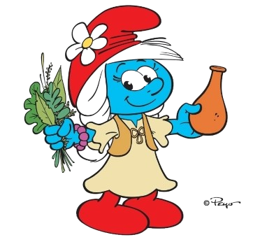

The girls’ leader and the female equivalent of Papa Smurf. She’s the matriarch, someone the girls trust and look up to. And for good reason. She’s wise, strong, brave, and funny. She knows the secrets of nature and the properties of every kind of plant. She can even communicate with them! Unlike Papa Smurf, Willow is more like a shaman than an alchemist.She has a lighter side too and she loves to tease Papa Smurf. Without a doubt, her favorite pastime is playing dominoes. And nobody dares challenge her because she’s just too good !